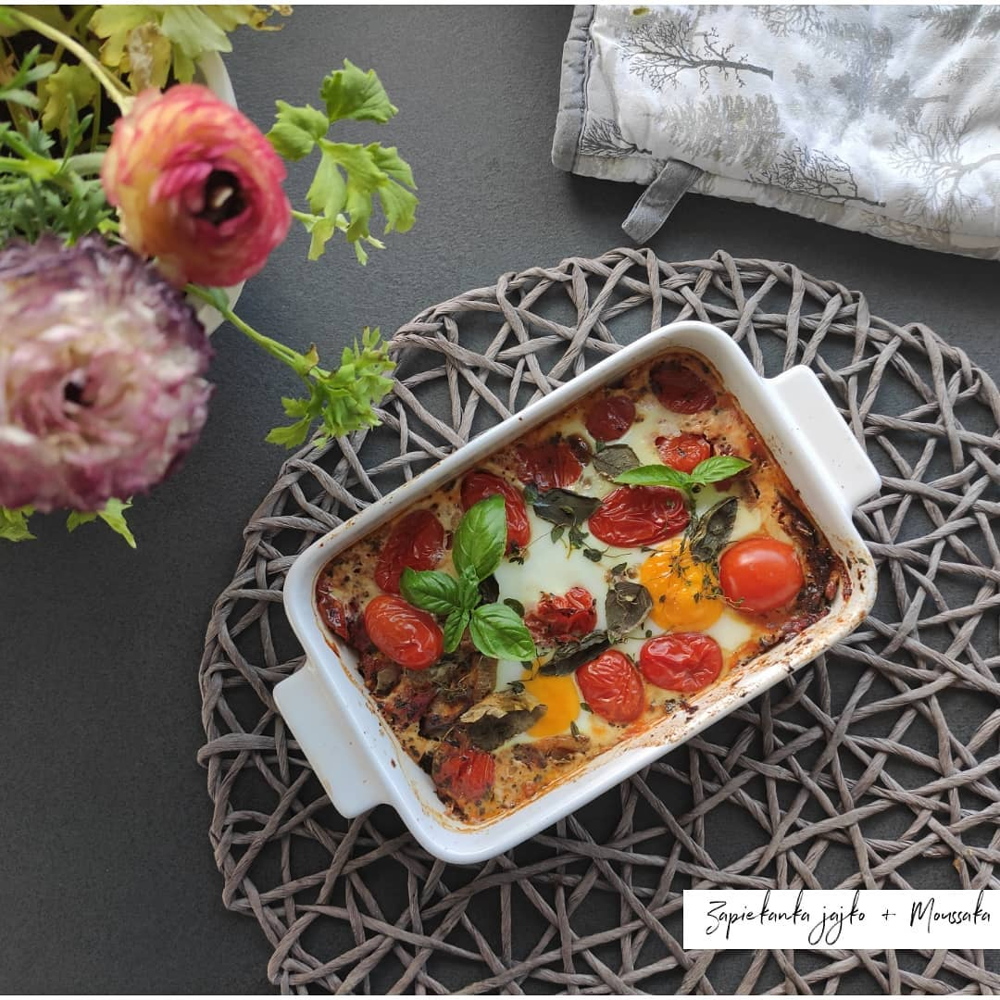

Grécka musaka podľa @mayacotta — Normy Jedál
Mało wielkanocne 😄 klimaty...
hybryda szakszuki z Moussaka...
resztki greckiej Moussaki zapiekane z pomidorami koktajlowymi, jajkiem i bazylią .
#moussaka #greckamusaka #zapiekankamusaka #zapiekankajajko #zapiekanka #moussaka #szakszukapieczona